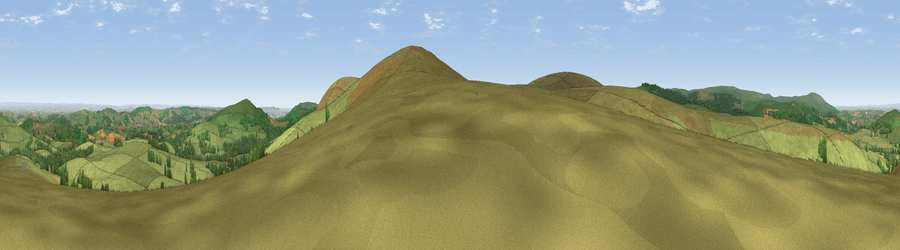

Viewpoint near North Bovey
#7209 in England · top 12% of its area beats it · near North BoveyWhere it is
The exact computed spot (SX 69775 82838). Click the marker for map links.
The view, rendered

A 360° render of this exact spot computed from the terrain model, tree cover and land cover — summer colours, afternoon light, calibrated against photographs of famous viewpoints. Real trees, hedges and buildings will differ in detail.
The panorama
Grey silhouette: terrain skyline in each direction (720 bearings, Earth curvature and refraction included). Dashed green: skyline with trees (+15 m) and buildings (+8 m) as obstacles. Blue strip: how far the ground is visible on each bearing.
Where the view opens
Wedge length = distance to the farthest visible ground on that bearing (vegetation-aware). Rings at 10, 25 and 50 km.
What fills the view
85% grassland · 14% woodland · 1% cropland
Angular shares of the visible panorama (visual magnitude), not map area. Landscape diversity 0.21 (0–1 Shannon).
Key numbers
More beautiful places nearby
The staircase of upgrades: each row has a higher view potential than everything closer. Driving times are estimates from straight-line distance, calibrated against real road routing — check an actual route before setting out.
| Place | Direction | Drive | Score |
|---|---|---|---|
| Viewpoint near North Bovey | SSE · 1 km | ~3 min | 74.8 |
| Viewpoint near North Bovey | SE · 2 km | ~5 min | 76.3 |
| Viewpoint near North Bovey | E · 3 km | ~8 min | 79.3 |
| Cairn | ESE · 8 km | ~15 min | 79.8 |
| Viewpoint near Haytor Vale | ESE · 8 km | ~17 min | 80.1 |
| Viewpoint near Buckland in the Moor | SSE · 10 km | ~20 min | 80.7 |
| Viewpoint near Dousland | SW · 19 km | ~33 min | 81.0 |
| Shell Top | SSW · 21 km | ~36 min | 81.8 |
50.63065, -3.84265 · source: screening · position refined by local search. Computed location — check access rights before visiting.